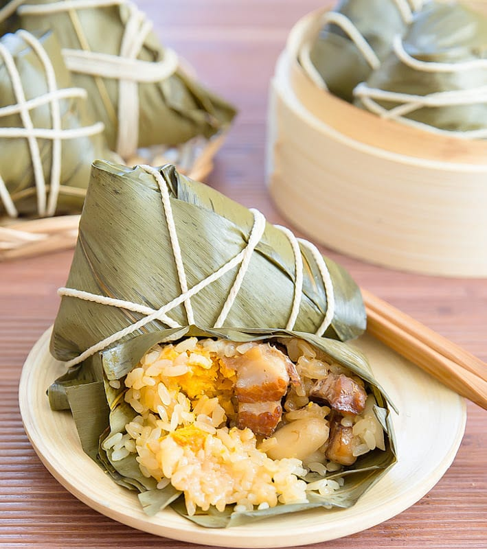
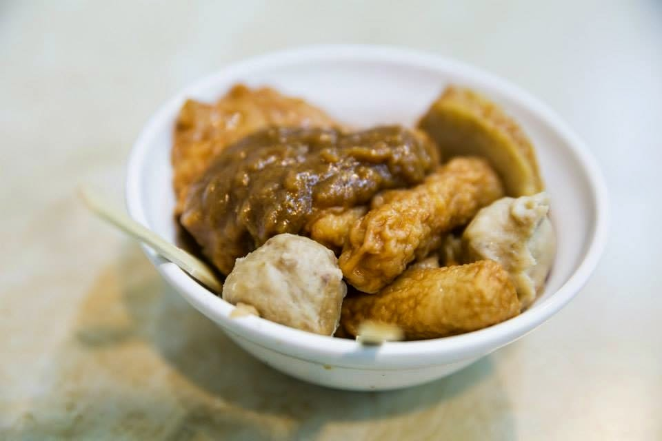
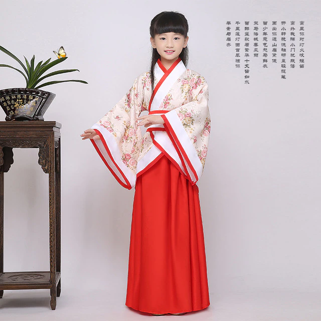
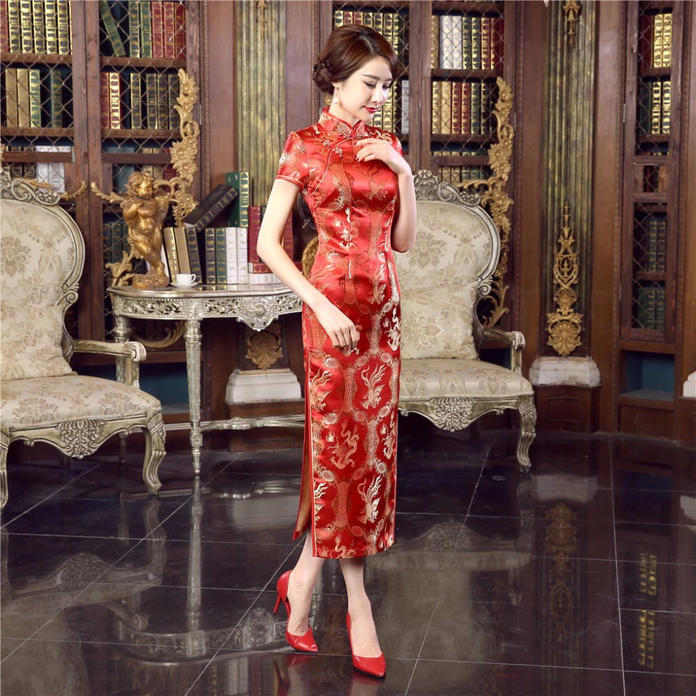
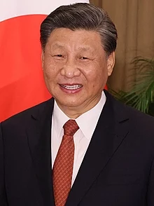

CHINA
A China é uma das principais nações do mundo atual, e a presença humana naquela região remonta ao período Neolítico. A Antiguidade chinesa foi marcada pela existência de diversas dinastias que governaram o país até o começo do século XX. As primeiras três dinastias da China foram as seguintes: Xia, Shang e Zhou. Na história recente, a China ficou marcada pelas interferências britânicas durante o avanço imperialista sobre a Ásia no século XIX e pela invasão japonesa na década de 1930. A Revolução Chinesa de 1949 fez com que os comunistas, liderados por Mao Tsé-Tung, tomassem o poder após anos de guerra civil.
Cultura
Costumes
• A obediência e a deferência à hierarquia está entre os costumes mais rígidos na sociedade chinesa. A ordem é colocar em primeiro lugar os homens mais velhos, depois os homens mais jovens e, depois as mulheres mais velhas, seguidas das mulheres mais jovens.
• A interação social é regida pelo confucionismo, que prevê a honra, dignidade, lealdade e respeito à antiguidade.
• O toque é permitido entre pessoas do mesmo sexo, mas pouco tolerado entre os indivíduos do sexo oposto. É comum a oferta de presentes na ocasião do Ano Novo Chinês, nos aniversários, casamentos e nascimentos.
• Há presentes, contudo, que não são bem aceitos porque podem representar azar ou a morte. Entre eles estão lenços, sandálias, flores, relógios, tesouras e facas. Um presente pode ser recusado até três vezes antes de ser aceito. Ao presentear, é importante fazê-lo com as duas mãos.
Culinária Chinesa
Zong Zi
Tian Bu La
Música
•A escala da música chinesa difere da usada no ocidente, que tem oito tons. A chinesa tem cinco e não há harmonia. Os instrumentos tradicionais são o violino de duas cordas, a flauta de três cordas, a flauta vertical, a flauta horizontal e os gongos.
•A ópera também está entre as mais tradicionais manifestações da arte chinesa. São ao menos 300 formas diferentes de apresentá-la, com performances que envolvem acrobacias e requintada maquiagem.
Roupas Típicas
PIEN-FU é umas das roupas típicas
CHI- P’AO é umas das roupas típicas
Idioma Oficial
•O chinês é uma família de línguas de imensa diversidade e complexidade. Os dialetos chineses resultam da língua sino-tibetana, mas são inteiramente diferentes entre si. A língua oficial da China é o mandarim.
•A língua chinesa é tonal, por isso as palavras são diferenciadas pelo som e pela entonação, que pode subir ou descer.
Presidente Da China
Xi Jinping
Pontos Turiticos
•Cidade Proibida: Esse local fica no centro antigo de Pequim e foi construído no século 15. O palácio tem aproximadamente 900 edifícios e 8 mil salas. Além disso, ela está ao lado de outro ponto importante da China, a Praça da Paz Celestial.
•Ding Ding: A melhor forma de conhecer Hong Kong. A Ding é uma onomatopeia de icônicos elétricos. Os turistas e moradores da cidade passeiam por diversas localidades com esse meio de transporte. Esse meio de transporte circula em uma velocidade lenta. O Ding transporta cerca de 200 mil pessoas diariamente. Essa é uma ótima forma de conhecer a vida tradicional e moderna de Hong Kong.
•Palácio de Potala: Esse ponto está localizado em Lhasa, no sudoeste da China. O palácio atualmente virou um museu para que os turistas possam conhecer um pouco sobre a cultura dessa localidade. O seu nome leva de referência o Monte Potala, morada de Chenrezig, o bodhisattva que representa a compaixão de todos os budas.
•Parque Nacional Jiuzhaigou: Esse vale reúne uma beleza natural incrível, com paisagens naturais. A região tem cerca de 72 mil hectares, com montanhas que chegam a 4.800 metros. O local possui uma série de ecossistemas e florestas diferentes.
Dados Gerais Sobre A China
• Nome oficial: República Popular da China
• Tipo de governo: República Comunista
• Capital: Pequim (Beijing)
• Língua oficial: Mandarim
• Localização: Ásia
• Área: 9.596.961 km2
• População: 1.419.257.177 habitantes
• Densidade demográfica: 146,29 hab/km2
• Índice de Desenvolvimento Humano (IDH): 0,752
• Produto Interno Bruto (PIB): US$ 12,24 trilhões
• Moeda: Renminbi